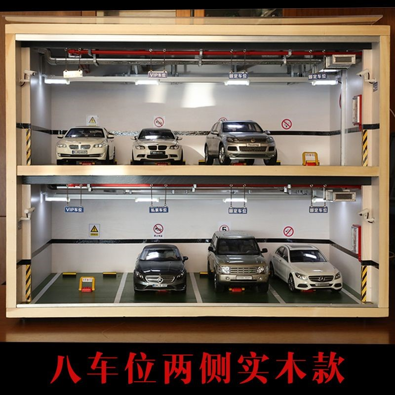
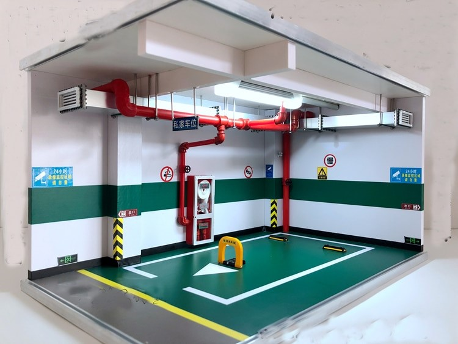
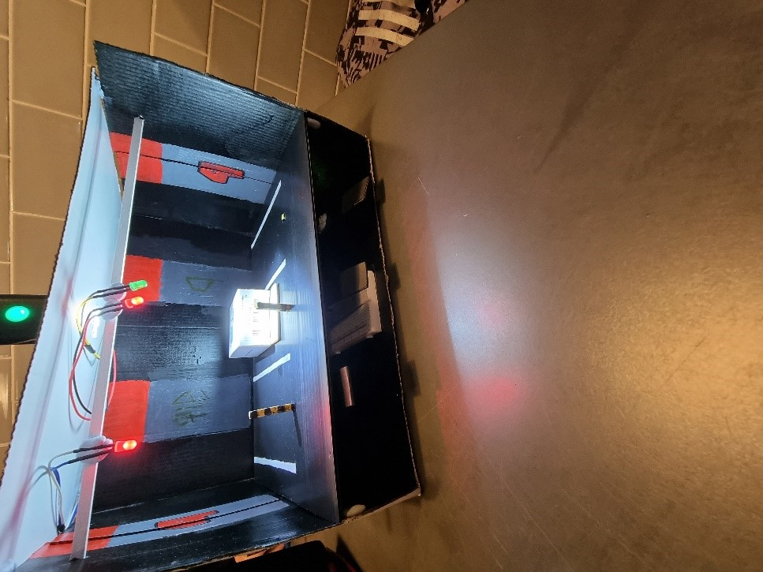
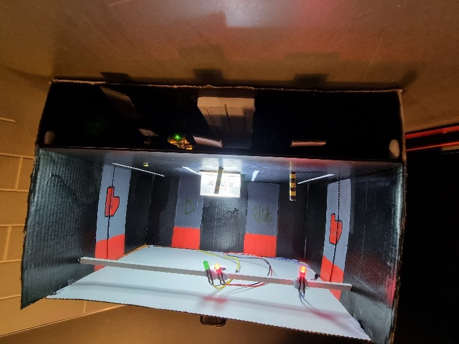

Tools and Technology
Artefact 1: Mobile Booking Application:
One of the technologies used to produce our mobile app prototype is Figma, an online prototyping tool for applications. We had considered using Proto.io, however, compared to Figma, Proto.io required the purchase of a premium membership to bring out its full potential. As such, we had decided to use Figma to develop our mobile app prototype, as it was free and because most of our members had some experience using it.
In terms of experience using Figma, both Anthony and Victor (the ones developing the prototype) have little to no experience using Figma. Anthony had never used Figma before, so he had to take the time to learn how to use the tool quickly before moving to developing the actual prototype. Victor, on the other hand, had some prior experience using Figma, but still wanted to take some time to brush up on his knowledge of the tool. The other members of the team also have some experience using the tool, however won’t be required to brush up on their knowledge as they won’t be working on the development of the Figma prototype.
Artefact 2.1: Arduino Sensory:
To create the overall artefact, the Arduino IDE 1.8.15 is required in order to program the Arduino board specifically the Arduino Uno board. A knowledge of the programming language C++ is used to do the programming required. Not only must there be an understanding in C++ but also understand the various functions that can be used specifically in Arduino to control different parts. 4 LEDs were used in this system (2 green and 2 red), a light dependent resistor, a multitude of wires of different lengths and sizes, 5 220Ω resistors and a servo motor. Specifically for the LEDs, solder and a soldering iron were used to attach wires to the LEDs to extend their length. All of these parts were connected on to a breadboard which will allow more space for all the different parts.
George has had experience with using Arduino technology as in years 11 and 12 in high school he used an Arduino and has gained experienced by completing school projects in his systems engineering class back then. Victor also has basic knowledge using an Arduino however it has been years since he has used one. Sahil also has a good understanding on using an Arduino similar to George’s situation. George will however be creating the electronics part of the project.


Artefact 2.2: Parking Complex Miniature:
Furthermore, the miniature to house all the components of the Arduino was conceptualised, designed and developed by Victor. The miniature was created to demonstrate how the proposed system could potentially be implemented in a real parking lot. The idea for the design stemmed from reference images of other carpark models but was mostly based on what the groups proposed scope was.
 Figure 1 (Left): Pinterest, 2021, 1:18 parking lot model scene double-layer solid wood parking garage simulation model accessories display cabinet eight parking spaces, photograph,viewed 18 May 2021, <https://www.pinterest.com.au/pin/455356212328325546/>  Figure 2 (Right): AliExpress, 2021, 1:18 alloy model car simulation underground garage parking lot space children's toys scene display, photograph, viewed 18 May 2021, <https://www.aliexpress.com/i/32970775594.html>Hence, to meet the proposed scope we had set, it was decided to create the model with three parking spots. This was due to the fact that the application created on Figma was non-functional but displayed a main key path scenario of typical usage of the app and its main functions. At this point, the scope of the group had also included the implementation of a bollard system. This would further demonstrate the effectiveness of our proposed system and its reliability. The bollard system works using a servo motor to raise and retract the bollard once the vehicle goes over the photoresistor, dropping the light level and sending a signal to the Arduino program.
 